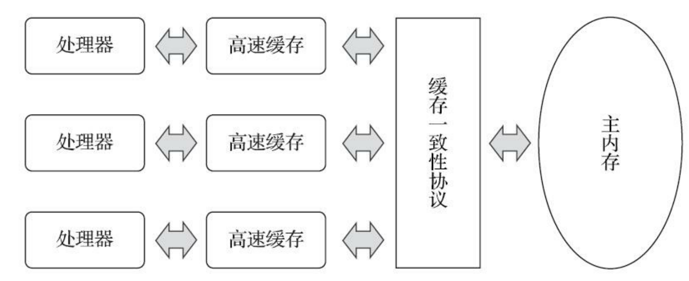
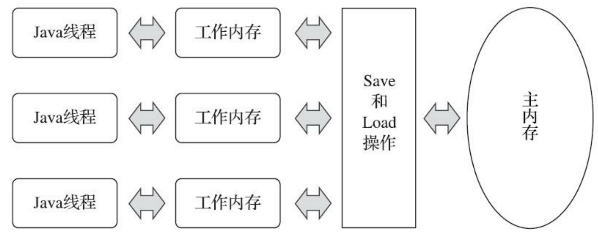
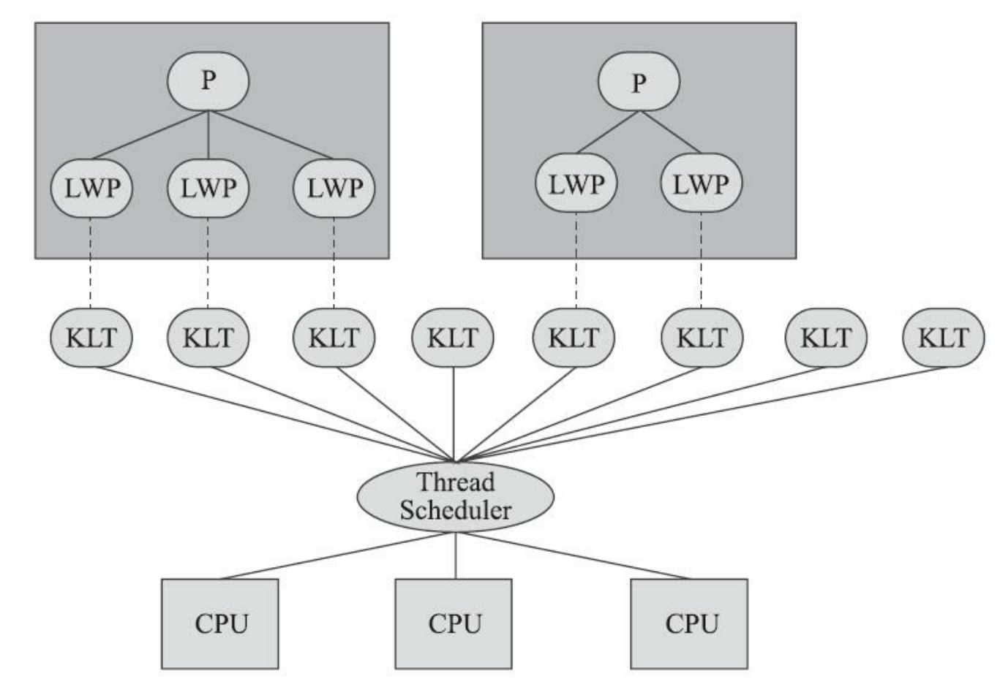
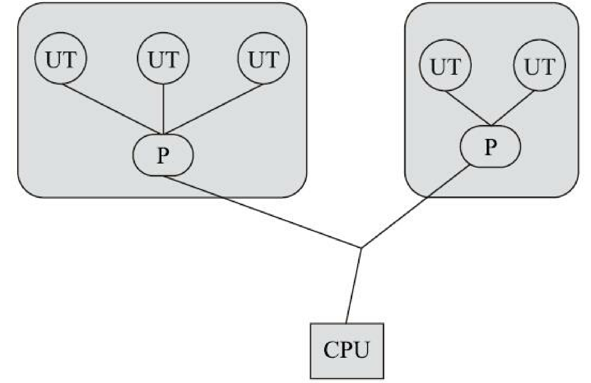
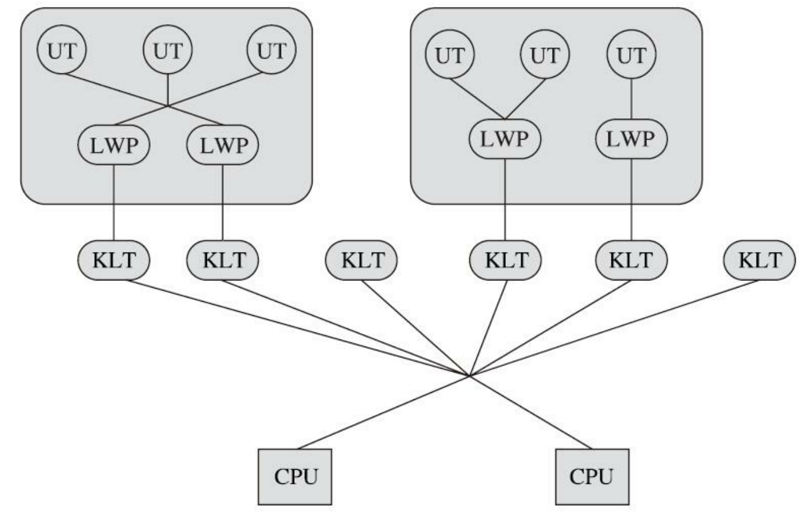
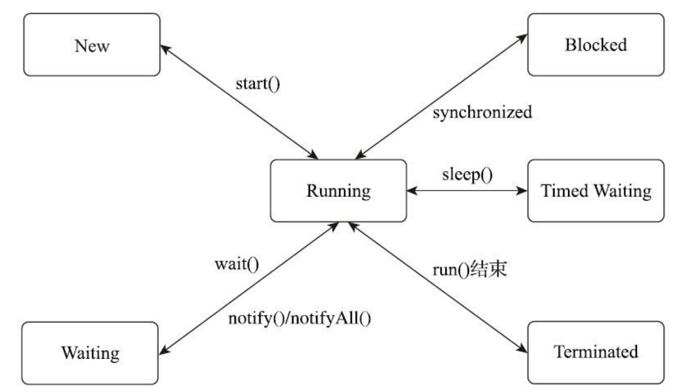

第12章 Java内存模型与线程
并发处理的广泛应用是Amdahl定律代替摩尔定律^1成为计算机性能发展源动力的根本原因，也是人类压榨计算机运算能力的最有力武器。
12.1 概述
衡量一个服务性能的高低好坏，每秒事务处理数（Transactions Per Second，TPS）是重要的指标之一，它代表着一秒内服务端平均能响应的请求总数，而TPS值与程序的并发能力又有非常密切的关系。
服务端的应用是Java语言最擅长的领域之一，这个领域的应用占了Java应用中最大的一块份额，不过如何写好并发应用程序却又是服务端程序开发的难点之一，处理好并发方面的问题通常需要更多的编码经验来支持。
12.2 硬件的效率与一致性
绝大多数的运算任务都不可能只靠处理器“计算”就能完成。
处理器至少要与内存交互，如读取运算数据、存储运算结果等，这个I/O操作就是很难消除的（无法仅靠寄存器来完成所有运算任务）。
由于计算机的存储设备与处理器的运算速度有着几个数量级的差距，所以现代计算机系统都不得不加入一层或多层读写速度尽可能接近处理器运算速度的高速缓存（Cache）来作为内存与处理器之间的缓冲：
- 将运算需要使用的数据复制到缓存中，让运算能快速进行，当运算结束后再从缓存同步回内存之中，这样处理器就无须等待缓慢的内存读写了。
基于高速缓存的存储交互很好地解决了处理器与内存速度之间的矛盾，但是也为计算机系统带来更高的复杂度，它引入了一个新的问题：缓存一致性（Cache Coherence）。
在多路处理器系统中，每个处理器都有自己的高速缓存，而它们又共享同一主内存（Main Memory），这种系统称为共享内存
多核系统（Shared Memory Multiprocessors System），如图12-1所示。

除了增加高速缓存之外，为了使处理器内部的运算单元能尽量被充分利用，处理器可能会对输入代码进行乱序执行（Out-Of-Order Execution）优化，处理器会在计算之后将乱序执行的结果重组，保证该结果与顺序执行的结果是一致的，但并不保证程序中各个语句计算的先后顺序与输入代码中的顺序一致，因此如果存在一个计算任务依赖另外一个计算任务的中间结果，那么其顺序性并不能靠代码的先后顺序来保证。
与处理器的乱序执行优化类似，Java虚拟机的即时编译器中也有指令重排序（Instruction Reorder）优化。
12.3 Java内存模型
《Java虚拟机规范》[1]中曾试图定义一种“Java内存模型”（Java Memory Model，JMM）来屏蔽各种硬件和操作系统的内存访问差异，以实现让Java程序在各种平台下都能达到一致的内存访问效果。
12.3.1 主内存与工作内存
Java内存模型的主要目的是定义程序中各种变量的访问规则，即关注在虚拟机中把变量值存储到内存和从内存中取出变量值这样的底层细节。此处的变量（Variables）与Java编程中所说的变量有所区别，它包括了实例字段、静态字段和构成数组对象的元素，但是不包括局部变量与方法参数，因为后者是线程私有^2的，不会被共享，自然就不会存在竞争问题。
Java内存模型规定了所有的变量都存储在主内存（Main Memory）中（此处的主内存与介绍物理硬件时提到的主内存名字一样，两者也可以类比，但物理上它仅是虚拟机内存的一部分）。
每条线程还有自己的工作内存（Working Memory，可与前面讲的处理器高速缓存类比），线程的工作内存中保存了被该线程使用的变量的主内存副本[^3]，线程对变量的所有操作（读取、赋值等）都必须在工作内存中进行，而不能直接读写主内存中的数据[^4]。
不同的线程之间也无法直接访问对方工作内存中的变量，线程间变量值的传递均需要通过主内存来完成，线程、主内存、工作内存三者的交互关系如图12-2所示，注意与图12-1进行对比。

这里所讲的主内存、工作内存与第2章所讲的Java内存区域中的Java堆、栈、方法区等并不是同一个层次的对内存的划分，这两者基本上是没有任何关系的。如果两者一定要勉强对应起来，那么从变量、主内存、工作内存的定义来看，主内存主要对应于Java堆中的对象实例数据部分[^5]，而工作内存则对应于虚拟机栈中的部分区域。从更基础的层次上说，主内存直接对应于物理硬件的内存，而为了获取更好的运行速度，虚拟机（或者是硬件、操作系统本身的优化措施）可能会让工作内存优先存储于寄存器和高速缓存中，因为程序运行时主要访问的是工作内存。
[^3]: 如“假设线程中访问一个10MB大小的对象，也会把 这10MB的内存复制一份出来吗？”，事实上并不会如此，这个对象的引用、对象中某个在线程访问到的字段是有可能被复制的，但不会有虚拟机把整个对象复制一次。
[^4]: 根据《Java虚拟机规范》的约定，volatile变量依然有工作内存的拷贝，但是由于它特殊的操作顺序性规定（后文会讲到），所以看起来如同直接在主内存中读写访问一般，因此这里的描述对于volatile
[^5]: 除了实例数据，Java堆还保存了对象的其他信息，对于HotSpot虚拟机来讲，有Mark Word（存储对 象哈希码、GC标志、GC年龄、同步锁等信息）、Klass Point（指向存储类型元数据的指针）及一些用于字节对齐补白的填充数据（如果实例数据刚好满足8字节对齐，则可以不存在补白）。
12.3.2 内存间交互操作
关于主内存与工作内存之间具体的交互协议，即一个变量如何从主内存拷贝到工作内存、如何从工作内存同步回主内存这一类的实现细节，Java内存模型中定义了以下8种操作来完成。
Java虚拟机实现时必须保证下面提及的每一种操作都是原子的、不可再分的；（对于double和long类型的变量来说， load、store、read和write操作在某些平台上允许有例外）
lock（锁定）：作用于主内存的变量，它把一个变量标识为一条线程独占的状态。
unlock（解锁）：作用于主内存的变量，它把一个处于锁定状态的变量释放出来，释放后的变量才可以被其他线程锁定。
read（读取）：作用于主内存的变量，它把一个变量的值从主内存传输到线程的工作内存中，以便随后的load动作使用。
load（载入）：作用于工作内存的变量，它把read操作从主内存中得到的变量值放入工作内存的变量副本中。
use（使用）：作用于工作内存的变量，它把工作内存中一个变量的值传递给执行引擎，每当虚拟机遇到一个需要使用变量的值的字节码指令时将会执行这个操作。
assign（赋值）：作用于工作内存的变量，它把一个从执行引擎接收的值赋给工作内存的变量，每当虚拟机遇到一个给变量赋值的字节码指令时执行这个操作。
store（存储）：作用于工作内存的变量，它把工作内存中一个变量的值传送到主内存中，以便随后的write操作使用。
write（写入）：作用于主内存的变量，它把store操作从工作内存中得到的变量的值放入主内存的变量中。
如果要把一个变量从主内存拷贝到工作内存，那就要按顺序执行read和load操作，如果要把变量从工作内存同步回主内存，就要按顺序执行store和write操作。注意，Java内存模型只要求上述两个操作必须按顺序执行，但不要求是连续执行。
也就是说read与load之间、store与write之间是可插入其他指令的，如对主内存中的变量a、b进行访问时，一种可能出现的顺序是read a、read b、load b、load a。
除此之外，Java内存模型还规定了在执行上述8种基本操作时必须满足如下规则：
不允许read和load、store和write操作之一单独出现，即不允许一个变量从主内存读取了但工作内存不接受，或者工作内存发起回写了但主内存不接受的情况出现。
不允许一个线程丢弃它最近的assign操作，即变量在工作内存中改变了之后必须把该变化同步回主内存。
不允许一个线程无原因地（没有发生过任何assign操作）把数据从线程的工作内存同步回主内存中。
一个新的变量只能在主内存中“诞生”，不允许在工作内存中直接使用一个未被初始化（load或assign）的变量，换句话说就是对一个变量实施use、store操作之前，必须先执行assign和load操作。
一个变量在同一个时刻只允许一条线程对其进行lock操作，但lock操作可以被同一条线程重复执行多次，多次执行lock后，只有执行相同次数的unlock操作，变量才会被解锁。
如果对一个变量执行lock操作，那将会清空工作内存中此变量的值，在执行引擎使用这个变量前，需要重新执行load或assign操作以初始化变量的值。
如果一个变量事先没有被lock操作锁定，那就不允许对它执行unlock操作，也不允许去unlock一个被其他线程锁定的变量。
对一个变量执行unlock操作之前，必须先把此变量同步回主内存中（执行store、write操作）。
12.3.3 对于volatile型变量的特殊规则
关键字volatile可以说是Java虚拟机提供的最轻量级的同步机制，但是它并不容易被正确、完整地理解，以至于许多程序员都习惯去避免使用它，遇到需要处理多线程数据竞争问题的时候一律使用synchronized来进行同步。
当一个变量被定义成volatile之后，它将具备两项特性：
第一项是保证此变量对所有线程的可见性，这里的“可见性”是指当一条线程修改了这个变量的值，新值对于其他线程来说是可以立即得知的。而普通变量并不能做到这一点，普通变量的值在线程间传递时均需要通过主内存来完成。
使用volatile变量的第二个语义是禁止指令重排序优化，普通的变量仅会保证在该方法的执行过程中所有依赖赋值结果的地方都能获取到正确的结果，而不能保证变量赋值操作的顺序与程序代码中的执行顺序一致。
保证此变量对所有线程的可见性
volatile变量在各个线程的工作内存中是不存在一致性问题的（从物理存储的角度看，各个线程的工作内存中volatile变量也可以存在不一致的情况，但由于每次使用之前都要先刷新，执行引擎看不到不一致的情况，因此可以认为不存在一致性问题），但是Java里面的运算操作符并非原子操作，这导致volatile变量的运算在并发下一样是不安全的，请看代码清单12-1中演示的例子。
1 | /** |
即使编译出来只有一条字节码指令，也并不意味执行这条指令就是一个原子操作。
由于volatile变量只能保证可见性，在不符合以下两条规则的运算场景中，我们仍然要通过加锁（使用synchronized、java.util.concurrent中的锁或原子类）来保证原子性：
运算结果并不依赖变量的当前值，或者能够确保只有单一的线程修改变量的值。
变量不需要与其他的状态变量共同参与不变约束。
1
2
3volatile int a = 0;
a++; //不能保证一致性
a=1; //可以保证一致性，因为赋值给a不依赖a之前的值
禁止指令重排序优化
1 | Map configOptions; |
代码清单12-4中所示的程序是一段伪代码，其中描述的场景是开发中常见配置读取过程，只是我们在处理配置文件时一般不会出现并发，所以没有察觉这会有问题。读者试想一下，如果定义initialized变量时没有使用volatile修饰，就可能会由于指令重排序的优化，导致位于线程A中最后一条代码“initialized=true”被提前执行（这里虽然使用Java作为伪代码，但所指的重排序优化是机器级的优化操作，提前执行是指这条语句对应的汇编代码被提前执行），这样在线程B中使用配置信息的代码就可能出现错误，而volatile关键字则可以避免此类情况的发生。
代码清单12-5 DCL单例模式
1 | public class Singleton{ |
那为何说它禁止指令重排序呢？从硬件架构上讲，指令重排序是指处理器采用了允许将多条指令不按程序规定的顺序分开发送给各个相应的电路单元进行处理。但并不是说指令任意重排，处理器必须能正确处理指令依赖情况保障程序能得出正确的执行结果。
譬如指令1把地址A中的值加10，指令2把地址A中的值乘以2，指令3把地址B中的值减去3，这时指令1和指令2是有依赖的，它们之间的顺序不能重排——(A+10)2与A2+10显然不相等，但指令3可以重排到指令1、2之前或者中间，只要保证处理器执行后面依赖到A、B值的操作时能获取正确的A和B值即可。所以在同一个处理器中，重排序过的代码看起来依然是有序的。
Java内存模型中对volatile变量定义的特殊规则的定义。假定T表示一个线程，V和W分别表示两个volatile型变量，那么在进行read、load、use、assign、store和write操作时需要满足如下规则：
- 只有当线程T对变量V执行的前一个动作是load的时候，线程T才能对变量V执行use动作；并且，只有当线程T对变量V执行的后一个动作是use的时候，线程T才能对变量V执行load动作。线程T对变量V的use动作可以认为是和线程T对变量V的load、read动作相关联的，必须连续且一起出现。
这条规则要求在工作内存中，每次使用V前都必须先从主内存刷新最新的值，用于保证能看见其他线程对变量V所做的修改。
- 只有当线程T对变量V执行的前一个动作是assign的时候，线程T才能对变量V执行store动作；并且，只有当线程T对变量V执行的后一个动作是store的时候，线程T才能对变量V执行assign动作。线程T对变量V的assign动作可以认为是和线程T对变量V的store、write动作相关联的，必须连续且一起出现。
这条规则要求在工作内存中，每次修改V后都必须立刻同步回主内存中，用于保证其他线程可以看到自己对变量V所做的修改。
- 假定动作A是线程T对变量V实施的use或assign动作，假定动作F是和动作A相关联的load或store动作，假定动作P是和动作F相应的对变量V的read或write动作；与此类似，假定动作B是线程T对变量W实施的use或assign动作，假定动作G是和动作B相关联的load或store动作，假定动作Q是和动作G相应的对变量W的read或write动作。如果A先于B，那么P先于Q。
这条规则要求volatile修饰的变量不会被指令重排序优化，从而保证代码的执行顺序与程序的顺序相同。
12.3.4 针对long和double型变量的特殊规则
12.3.5 原子性、可见性与有序性
Java内存模型是围绕着在并发过程中如何处理原子性、可见性和有序性这三个特征来建立的。
1.原子性（Atomicity）
由Java内存模型来直接保证的原子性变量操作包括read、load、assign、use、store和write这六个，我们大致可以认为，基本数据类型的访问、读写都是具备原子性的。
如果应用场景需要一个更大范围的原子性保证（经常会遇到），Java内存模型还提供了lock和unlock操作来满足这种需求，尽管虚拟机未把lock和unlock操作直接开放给用户使用，但是却提供了更高层次的字节码指令monitorenter和monitorexit来隐式地使用这两个操作。这两个字节码指令反映到Java代码中就是同步块——synchronized关键字，因此在synchronized块之间的操作也具备原子性。
2.可见性（Visibility）
可见性就是指当一个线程修改了共享变量的值时，其他线程能够立即得知这个修改。
Java内存模型是通过在变量修改后将新值同步回主内存，在变量读取前从主内存刷新变量值这种依赖主内存作为传递媒介的方式来实现可见性的，无论是普通变量还是volatile变量都是如此。
普通变量与volatile变量的区别是：volatile的特殊规则保证了新值能立即同步到主内存，以及每次使用前立即从主内存刷新。
除了volatile之外，Java还有两个关键字能实现可见性，它们是synchronized和final。
同步块的可见性是由“对一个变量执行unlock操作之前，必须先把此变量同步回主内存中（执行store、write操作）”这条规则获得的。
而final关键字的可见性是指：被final修饰的字段在构造器中一旦被初始化完成，并且构造器没有把“this”的引用传递出去（this引用逃逸是一件很危险的事情，其他线程有可能通过这个引用访问到“初始化了一半”的对象），那么在其他线程中就能看见final字段的值。
如代码清单12-7所示，变量i与j都具备可见性，它们无须同步就能被其他线程正确访问。
代码清单12-7 final与可见性
1 | public static final int i; |
3.有序性（Ordering）
Java程序中天然的有序性可以总结为一句话：
- 如果在本线程内观察，所有的操作都是有序的；
- 如果在一个线程中观察另一个线程，所有的操作都是无序的。
前半句是指“线程内似表现为串行的语义”（Within-Thread As-If-Serial Semantics），后半句是指“指令重排序”现象和“工作内存与主内存同步延迟”现象。
Java语言提供了volatile和synchronized两个关键字来保证线程之间操作的有序性，volatile关键字本身就包含了禁止指令重排序的语义，而synchronized则是由“一个变量在同一个时刻只允许一条线程对其进行lock操作”这条规则获得的，这个规则决定了持有同一个锁的两个同步块只能串行地进入。
12.3.6 先行发生原则
这个原则非常重要，它是判断数据是否存在竞争，线程是否安全的非常有用的手段。
假设线程A中的操作“i=1”先行发生于线程B的操作“j=i”，那我们就可以确定在线程B的操作执行后，变量j的值一定是等于1，得出这个结论的依据有两个：一是根据先行发生原则，“i=1”的结果可以被观察到；二是线程C还没登场，线程A操作结束之后没有其他线程会修改变量i的值。
现在再来考虑线程C，我们依然保持线程A和B之间的先行发生关系，而C出现在线程A和B的操作之间，但是C与B没有先行发生关系，那j的值会是多少呢？答案是不确定！1和2都有可能，因为线程C对变量i的影响可能会被线程B观察到，也可能不会，这时候线程B就存在读取到过期数据的风险，不具备多线程安全性。
下面是Java内存模型下一些“天然的”先行发生关系，这些先行发生关系无须任何同步器协助就已经存在，可以在编码中直接使用。如果两个操作之间的关系不在此列，并且无法从下列规则推导出来，则它们就没有顺序性保障，虚拟机可以对它们随意地进行重排序。
程序次序规则（Program Order Rule）：在一个线程内，按照控制流顺序，书写在前面的操作先行发生于书写在后面的操作。注意，这里说的是控制流顺序而不是程序代码顺序，因为要考虑分支、循环等结构。
管程锁定规则（Monitor Lock Rule）：一个unlock操作先行发生于后面对同一个锁的lock操作。这里必须强调的是“同一个锁”，而“后面”是指时间上的先后。
volatile变量规则（Volatile Variable Rule）：对一个volatile变量的写操作先行发生于后面对这个变量的读操作，这里的“后面”同样是指时间上的先后。
线程启动规则（Thread Start Rule）：Thread对象的start()方法先行发生于此线程的每一个动作。
线程终止规则（Thread Termination Rule）：线程中的所有操作都先行发生于对此线程的终止检测，我们可以通过Thread::join()方法是否结束、Thread::isAlive()的返回值等手段检测线程是否已经终止执行。
线程中断规则（Thread Interruption Rule）：对线程interrupt()方法的调用先行发生于被中断线程的代码检测到中断事件的发生，可以通过Thread::interrupted()方法检测到是否有中断发生。
对象终结规则（Finalizer Rule）：一个对象的初始化完成（构造函数执行结束）先行发生于它的finalize()方法的开始。
传递性（Transitivity）：如果操作A先行发生于操作B，操作B先行发生于操作C，那就可以得出操作A先行发生于操作C的结论。
Java语言无须任何同步手段保障就能成立的先行发生规则有且只有上面这些。
一个操作“时间上的先发生”不代表这个操作会是“先行发生”，时间先后顺序与先行发生原则之间基本没有因果关系。
12.4 Java与线程
12.4.1 线程的实现
线程是比进程更轻量级的调度执行单位，线程的引入，可以把一个进程的资源分配和执行调度分开，各个线程既可以共享进程资源（内存地址、文件I/O等），又可以独立调度。
目前线程是Java里面进行处理器资源调度的最基本单位，不过如果日后Loom项目能成功为Java引入纤程（Fiber）的话，可能就会改变这一点。
主流的操作系统都提供了线程实现，Java语言则提供了在不同硬件和操作系统平台下对线程操作的统一处理，每个已经调用过start()方法且还未结束的java.lang.Thread类的实例就代表着一个线程。我们注意到Thread类与大部分的Java类库API有着显著差别，它的所有关键方法都被声明为Native。在Java类库API中，一个Native方法往往就意味着这个方法没有使用或无法使用平台无关的手段来实现（当然也可能是为了执行效率而使用Native方法，不过通常最高效率的手段也就是平台相关的手段）。
实现线程主要有三种方式：
使用内核线程实现（1：1实现），
使用用户线程实现（1：N实现），
使用用户线程加轻量级进程混合实现（N：M实现）。
1.内核线程实现
使用内核线程实现的方式也被称为1：1实现。内核线程（Kernel-Level Thread，KLT）就是直接由操作系统内核（Kernel，下称内核）支持的线程，这种线程由内核来完成线程切换，内核通过操纵调度器（Scheduler）对线程进行调度，并负责将线程的任务映射到各个处理器上。
每个内核线程可以视为内核的一个分身，这样操作系统就有能力同时处理多件事情，支持多线程的内核就称为多线程内核（Multi-Threads Kernel）。
程序一般不会直接使用内核线程，而是使用内核线程的一种高级接口——轻量级进程（Light Weight Process，LWP），轻量级进程就是我们通常意义上所讲的线程，由于每个轻量级进程都由一个内核线程支持，因此只有先支持内核线程，才能有轻量级进程。这种轻量级进程与内核线程之间1：1的关系称为一对一的线程模型，如图12-3所示。

由于内核线程的支持，每个轻量级进程都成为一个独立的调度单元，即使其中某一个轻量级进程在系统调用中被阻塞了，也不会影响整个进程继续工作。
轻量级进程也具有它的局限性：
首先，由于是基于内核线程实现的，所以各种线程操作，如创建、析构及同步，都需要进行系统调用。而系统调用的代价相对较高，需要在用户态（User Mode）和内核态（Kernel Mode）中来回切换。
其次，每个轻量级进程都需要有一个内核线程的支持，因此轻量级进程要消耗一定的内核资源（如内核线程的栈空间），因此一个系统支持轻量级进程的数量是有限的。
2.用户线程实现
使用用户线程实现的方式被称为1：N实现。
广义上来讲，一个线程只要不是内核线程，都可以认 为是用户线程（User Thread，UT）的一种，因此从这个定义上看，轻量级进程也属于用户线程，但轻量级进程的实现始终是建立在内核之上的，许多操作都要进行系统调用，因此效率会受到限制，并不具备通常意义上的用户线程的优点。
而狭义上的用户线程指的是完全建立在用户空间的线程库上，系统内核不能感知到用户线程的存在及如何实现的。**用户线程的建立、同步、销毁和调度完全在用户态中完成**，不需要内核的帮助。
如果程序实现得当，这种线程不需要切换到内核态，因此操作可以是非常快速且低消耗的，也能够支持规模更大的线程数量，部分高性能数据库中的多线程就是由用户线程实现的。这种进程与用户线程之间1：N的关系称为一对多的线程模型，如图12-4所示。

用户线程的优势在于不需要系统内核支援，劣势也在于没有系统内核的支援，所有的线程操作都需要由用户程序自己去处理。
一般的应用程序都不倾向使用用户线程。
但是近年来许多新的、以高并发为卖点的编程语言又普遍支持了用户线程，譬如Golang、Erlang等，使得用户线程的使用率有所回升。
3.混合实现
线程除了依赖内核线程实现和完全由用户程序自己实现之外，还有一种将内核线程与用户线程一起使用的实现方式，被称为N：M实现。
既存在用户线程，也存在轻量级进程。
用户线程还是完全建立在用户空间中，因此用户线程的创建、切换、析构等操作依然廉价，并且可以支持大规模的用户线程并发。而操作系统支持的轻量级进程则作为用户线程和内核线程之间的桥梁，这样可以使用内核提供的线程调度功能及处理器映射，并且用户线程的系统调用要通过轻量级进程来完成，这大大降低了整个进程被完全阻塞的风险。在这种混合模式中，用户线程与轻量级进程的数量比是不定的，是N：M的关系，如图12-5所示，这种就是多对多的线程模型。

许多UNIX系列的操作系统，如Solaris、HP-UX等都提供了M：N的线程模型实现。在这些操作系统上的应用也相对更容易应用M：N的线程模型。
4.Java线程的实现
从JDK 1.3起，“主流”平台上的“主流”商用Java虚拟机的线程模型普遍都被替换为基于操作系统原生线程模型来实现，即采用1：1的线程模型。
以HotSpot为例，它的每一个Java线程都是直接映射到一个操作系统原生线程来实现的，而且中间没有额外的间接结构，所以HotSpot自己是不会去干涉线程调度的（可以设置线程优先级给操作系统提供调度建议），全权交给底下的操作系统去处理，所以何时冻结或唤醒线程、该给线程分配多少处理器执行时间、该把线程安排给哪个处理器核心去执行等，都是由操作系统完成的，也都是由操作系统全权决定的。
12.4.2 Java线程调度
线程调度是指系统为线程分配处理器使用权的过程，调度主要方式有两种，分别是协同式（Cooperative Threads-Scheduling）线程调度和抢占式（Preemptive Threads-Scheduling）线程调度。
协同式调度的多线程系统
线程的执行时间由线程本身来控制，线程把自己的工作执行完了之后，要主动通知系统切换到另外一个线程上去。
- 协同式多线程的最大好处是实现简单，而且由于线程要把自己的事情干完后才会进行线程切换，切换操作对线程自己是可知的，所以一般没有什么线程同步的问题。
- 它的坏处也很明显：线程执行时间不可控制，甚至如果一个线程的代码编写有问题，一直不告知系统进行线程切换，那么程序就会一直阻塞在那里。
抢占式调度的多线程系统
每个线程将由系统来分配执行时间，线程的切换不由线程本身来决定。
可以通过优先级“建议”操作系统给某些线程多分配一点执行时间，另外的一些线程则可以少分配一点。线程优先级并不是一项稳定的调节手段，线程调度最终还是由操作系统说了算。
Java使用的线程调度方式就是抢占式调度。
12.4.3 状态转换
Java语言定义了6种线程状态，在任意一个时间点中，一个线程只能有且只有其中的一种状态，并且可以通过特定的方法在不同状态之间转换。这6种状态分别是：
新建（New）：创建后尚未启动的线程处于这种状态。
运行（Runnable）：包括操作系统线程状态中的Running和Ready，也就是处于此状态的线程有可能正在执行，也有可能正在等待着操作系统为它分配执行时间。
无限期等待（Waiting）：处于这种状态的线程不会被分配处理器执行时间，它们要等待被其他线程显式唤醒。以下方法会让线程陷入无限期的等待状态：
没有设置Timeout参数的Object::wait()方法；
没有设置Timeout参数的Thread::join()方法；
LockSupport::park()方法。
限期等待（Timed Waiting）：处于这种状态的线程也不会被分配处理器执行时间，不过无须等待被其他线程显式唤醒，在一定时间之后它们会由系统自动唤醒。以下方法会让线程进入限期等待状态：
Thread::sleep()方法；
设置了Timeout参数的Object::wait()方法；
设置了Timeout参数的Thread::join()方法；
LockSupport::parkNanos()方法；
LockSupport::parkUntil()方法。
阻塞（Blocked）：线程被阻塞了，“阻塞状态”与“等待状态”的区别是“阻塞状态”在等待着获取到一个排它锁，这个事件将在另外一个线程放弃这个锁的时候发生；而“等待状态”则是在等待一段时间，或者唤醒动作的发生。在程序等待进入同步区域的时候，线程将进入这种（阻塞）状态。
结束（Terminated）：已终止线程的线程状态，线程已经结束执行。
上述6种状态在遇到特定事件发生的时候将会互相转换，它们的转换关系如图12-6所示。

12.5 Java与协程
12.5.1 内核线程的局限
内核线程的调度成本主要来自于用户态与核心态之间的状态转换，而这两种状态转换的开销主要来自于响应中断、保护和恢复执行现场的成本。
12.5.2 协程的复苏
由于最初多数的用户线程是被设计成协同式调度（Cooperative Scheduling）的，所以它有了一个别名——“协程”（Coroutine）。
协程的主要优势是轻量，无论是有栈协程还是无栈协程，都要比传统内核线程要轻量得多。
- 有栈协程：会完整地做调用栈的保护、恢复工作。
- 无栈协程：本质上是一种有限状态机，状态保存在闭包里，自然比有栈协程恢复调用栈要轻量得多，但功能也相对更有限。
12.5.3 Java的解决方案
纤程（Fiber）,它就是一种典型的有栈协程。